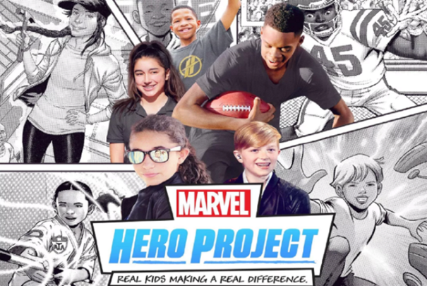

<section class="article-disney-plus py-5">
  <div class="container">
    <div class="row justify-content-center">
      <article class="col-sm-8">
        <h2>Marvel's Hero Project</h2>
        <h5>Mise à l'honneur et récompense de l'engagement d'un enfant dans un projet associatif</h5>

        <div class="article_img">
          
        </div>

        <p>
          Grande Fan de Disney et amoureuse incontestable des animaux et de la nature, j’ai trouvé cette série vraiment superbe et originale. C’est à la fois un documentaire animalier et une visite des parcs animaliers Disney comme on les voit rarement et qui permet à ceux qui ne peuvent pas aller les visiter en vrai de se rendre compte de tout le travail et les moyens mis en œuvre également dans la préservation des espèces.
        </p>

        <p>
          Il y a une saison de 20 épisodes, j’adorerais savoir s’il y a une suite, si on a des nouvelles de ce que chacun de projets mis en lumière deviennent.
        </p>

        <p>
          C’est un programme fédérateur qui place haut les valeurs humaines telles que le courage, la solidarité, la générosité et par les temps qui courent ça fait vraiment du bien.
        </p>

        <p>
          A n’en pas douter l’avenir est entre les mains des héros du quotidien.
        </p>

        <iframe width="560" height="315" src="https://www.youtube.com/embed/qpwRyA9pfFs" frameborder="0" allow="accelerometer; autoplay; clipboard-write; encrypted-media; gyroscope; picture-in-picture" allowfullscreen></iframe>

        <p class="signature text-end"><strong>Zira</strong></p>
      </article>

    </div>

  </div>

</section>
